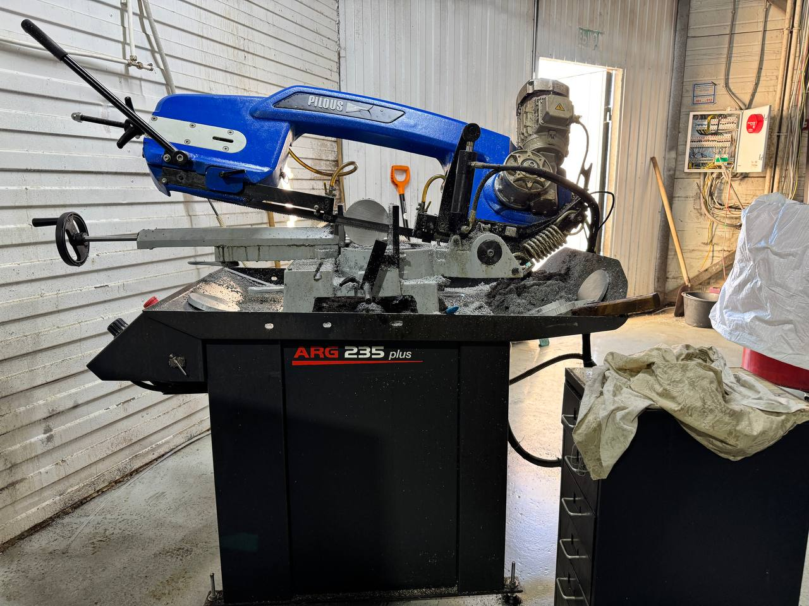

Стойки управления Delem — это «мозги» современного листогиба. От их состояния зависит точность гибки, скорость работы, безопасность оператора. Разберём типичные неисправности и процесс диагностики пошагово.

Типичные модели и их особенности
Delem производит несколько линеек стоек:
- DA-58T — базовая модель, управление 2 осями. Самая распространённая на бюджетных станках. Сенсорный экран 10.1"
- DA-66T — продвинутая, 4 оси, управление задним упором. Экран 15"
- DA-69T — топовая, до 8 осей, 3D-визуализация гибки. Экран 21"
- DA-60T серия — новые модели с поддержкой Industry 4.0
Принцип диагностики одинаков, но сложность отличается. DA-58T можно починить самостоятельно в большинстве случаев. DA-69T — лучше доверить специалисту.
Неисправность 1: Экран не включается
Симптомы: Панель не реагирует на включение, экран чёрный, индикация не появляется.
Пошаговая диагностика:
- Проверьте питание. Измерьте напряжение на входе стойки. Для Delem — 24V DC. Допуск ±10% (21.6-26.4V). Если напряжения нет — проблема в блоке питания станка, не в стойке.
- Проверьте предохранители. В блоке питания обычно 2 предохранителя — основной и на выходе 24V. Сгоревший предохранитель — первый кандидат.
- Проверьте кабель питания. Визуально — нет ли повреждений. Мультиметром — целостность жгута.
- Попробуйте «холодный перезапуск. Отключите питание на 30 секунд, подключите заново. Иногда «виснет» контроллер.
- Проверьте индикацию на плате. Внутри стойки на плате есть LED-индикаторы. Если горит зелёный — питание есть, проблема в экране или подключении.
Когда нужен сервис: Если питание есть, предохранители целы, а экран не включается — это неисправность матрицы или контроллера экрана. Замена матрицы DA-58T — от 35 000₽. Замена контроллера — от 25 000₽. Работа — от 8 000₽.

Неисправность 2: Ошибки сервоприводов
Симптомы: На экране появляется ошибка, связанная с сервоприводом. Станок останавливается, не выполняет команды. Сервопривод «гудит», но не вращается.
Типичные ошибки Delem:
- «Servo error» — расхождение между заданным и фактическим положением
- «Encoder error» — проблема с энкодером обратной связи
- «Overcurrent» — перегрузка по току — механическая проблема или неисправность серводрайвера
- «Position limit» — выход за пределы хода — проблема с концевиками или параметрами
Пошаговая диагностика:
- Запишите точный код ошибки и условия её появления (при каком действии, как часто)
- Проверьте кабель энкодера — визуально и на целостность мультиметром
- Проверьте соединение кабеля с платой — окисление, неплотная посадка
- В ручном режиме попробуйте переместить ось — чувствуете ли сопротивление?
- Если механически всё свободно — проблема в энкодере или серводрайвере
Кейс из практики: На DA-58T регулярно появлялась ошибка «Servo Y error» каждые 15-20 циклов. Причина — окисление контакта на разъёме энкодера. Контакт «прозвонился», показал повышенное сопротивление. Контакт-спрей + переподключение = ошибка исчезла. Стоимость: 2 000₽ (выезд + диагностика). Если бы заменили серводрайвер — от 45 000₽.
Неисправность 3: Сбой параметров
Симптомы: Станок «забывает» настройки, угловые поправки сбрасываются, программы пропадают.
Причины:
- Разряжение батарейки — на плате есть батарейка RTC (часов реального времени). Когда она разряжается — параметры сбрасываются
- Помехи по питанию — скачки напряжения вызывают сброс памяти
- Неисправность Flash-памяти — редко, но бывает. Память «теряет» данные
- Прошивка — некорректное обновление ПО
Пошаговое решение:
- Проверьте батарейку RTC. Напряжение нормальное — 3V. Ниже 2.7V — замените. Батарейка CR2032 — 100₽, замена — 1 000₽
- Загрузите параметры из бэкапа. Если бэкапа нет — из паспорта станка
- Проверьте стабильность питания — подключите через стабилизатор/UPS
- Если параметры сбиваются регулярно — проблема в Flash-памяти или помехах
Важно: Всегда делайте бэкап параметров! На Delem это делается через USB или последовательный порт. Бэкап занимает 5 минут, а восстановление параметров без него — от 2 часов с паспортом.

Неисправность 4: Сенсорный экран не реагирует
Симптомы: Экран светится, но касания не распознаются или распознаются неточно (нажимает не там, где касаетесь).
Пошаговая диагностика:
- Калибровка экрана. Через меню: Service → Touch Calibration. Следуйте инструкциям на экране. Часто проблема решается простой калибровкой.
- Очистка экрана. Пыль, масло, стружка на поверхности мешают распознаванию. Протрите мягкой тканью.
- Проверьте защитное стекло. Если установлено — может мешать. Попробуйте снять.
- Перезагрузка. Выключите питание на 30 секунд.
Когда нужна замена: Если калибровка не помогает — возможно повреждение сенсорного слоя. Замена экрана DA-58T — от 30 000₽. На DA-66T — от 45 000₽.
Неисправность 5: Станок не видит оси
Симптомы: ЧПУ не определяет наличие сервоприводов, оси не отображаются в списке, команды не отправляются.
Пошаговая диагностика:
- Проверьте подключение сервоприводов к плате — разъёмы должны быть плотно вставлены
- Проверьте питание серводрайверов — индикация на драйверах
- Проверьте Communication — CAN-шина или Ethernet (в зависимости от модели)
- Проверьте параметры конфигурации — количество осей должно соответствовать физической установке
Пример: После замены серводрайвера оси Y ЧПУ «не видело» привод. Причина — джампер на CAN-шине стоял в неправильном положении (нужен терминатор на последнем устройстве в шине). Перестановка джампера = 5 минут работы. Стоимость: 1 500₽ (диагностика).
Когда можно починить самому
Если у вас есть базовые навыки работы с электроникой и мультиметром:
- ✅ Замена предохранителей
- ✅ Проверка и замена батарейки RTC
- ✅ Калибровка сенсорного экрана
- ✅ Проверка и переподключение разъёмов
- ✅ Загрузка параметров из бэкапа
- ✅ Очистка от пыли и стружки
Когда нужен специалист
Без специального оборудования и опыта:
- ❌ Замена матрицы или контроллера экрана
- ❌ Ремонт платы (перепайка компонентов)
- ❌ Замена Flash-памяти
- ❌ Диагностика серводрайверов
- ❌ Обновление прошивки (риск «убить» стойку)
- ❌ Работа с CAN-шиной при нескольких осях
Стоимость ремонта стойки Delem:
- Диагностика: от 3 000₽
- Замена экрана: от 30 000₽ (работы + запчасти)
- Замена платы управления: от 25 000₽
- Ремонт платы (компоненты): от 15 000₽
- Обновление прошивки + настройка: от 8 000₽
Как предотвратить неисправности
- UPS (ИБП) — стабилизатор или ИБП обязательны. Скачки напряжения — главный враг электроники
- Бэкап параметров — делайте каждую неделю. Храните на USB-накопителе
- Чистота — пыль и стружка попадают в вентиляцию стойки. Продувайте компрессором раз в месяц
- Батарейка — меняйте раз в 2-3 года, не дожидаясь сброса параметров
- Влажность — если в цехе повышенная влажность — установите вентиляцию или осушитель
Ремонт стойки Delem
Диагностика и ремонт ЧПУ стоек Delem всех моделей. Выезд по Москве и МО. Бесплатная первичная консультация по телефону!
Позвонить: 8 (993) 908-98-37Или напишите в WhatsApp с моделью стойки и кодом ошибки
Читайте также: Ремонт станков ЧПУ — услуги | Как определить, что листогибу нужен ремонт
Детальный разбор неисправностей стойки Delem
Стойки Delem составляют около 40% рынка систем управления листогибами в России. Их надёжность проверена десятилетиями, но даже качественное оборудование требует обслуживания. Рассмотрим аспекты, важные для владельцев Delem.
Оригинальные vs неоригинальные запчасти
Оригинальные комплектующие гарантируют совместимость, но стоят дороже на 30-50%. Аналоги от проверенных производителей — отличная альтернатива при ограниченном бюджете. При замене платы управления используйте только оригинальные компоненты — несовместимость прошивок вызывает сбои. Сенсорные экраны — компонент, где аналоги зачастую не уступают оригиналу. Качественные IPS-панели имеют сопоставимое разрешение и время отклика.
Проблема «плавающих» ошибок
Коварная неисправность — ошибки, которые появляются и исчезают без закономерности. Причина: окисление контакта, который при температуре теряет соединение; микротрещина дорожки платы; нестабильное питание. Диагностика требует осциллографа — мультиметром такие дефекты не ловятся.
Обновление прошивки
Delem регулярно выпускает обновления. Обновляйтесь, когда исправлен баг, который вас затрагивает, или добавлена нужная функция. Если станок работает стабильно — обновление без причины лишний риск. Перед обновлением обязательно сделайте бэкап параметров.
Распространённые ошибки при ремонте
Замена батарейки RTC без сохранения параметров (все настройки сбиваются); неправильное подключение кабеля энкодера (поменяны фазы A и B — ось движется в обратную сторону); установка неподходящего блока питания; игнорирование заземления (помехи по земле вызывают «глюки» экрана). Каждая ошибка увеличивает стоимость ремонта.
Стоимость ремонта стойки Delem по моделям
| Модель | Диагностика | Замена экрана | Замена платы | Перепрошивка |
|---|---|---|---|---|
| DA-58T | 3 000 ₽ | от 35 000 ₽ | от 25 000 ₽ | от 8 000 ₽ |
| DA-66T | 3 500 ₽ | от 45 000 ₽ | от 30 000 ₽ | от 10 000 ₽ |
| DA-69T | 4 000 ₽ | от 60 000 ₽ | от 40 000 ₽ | от 12 000 ₽ |
| cybTouch | 2 500 ₽ | от 25 000 ₽ | от 18 000 ₽ | от 6 000 ₽ |
Профилактика стойки Delem
Наши специалисты обслуживают десятки стойек Delem ежемесячно. Обобщённые рекомендации на основе практики:
- ИБП обязателен. В цехах с перепадами напряжения окупается за один предотвращённый ремонт. Модификации от 1000 ВА.
- Батарейка RTC — раз в 2 года. CR2032 стоит 100₽, замена у мастера — 1 000₽. Сброс параметров — от 5 000₽.
- Пыль — враг №1. Продувайте стойку сжатым воздухом каждую неделю. Металлическая пыль проводит ток и вызывает КЗ.
- USB-бэкап — еженедельно. Занимает 5 минут. Восстановление без бэкапа — от 2 часов с паспортом.
- Заземление. Убедитесь, что станок заземлён. Помехи по «земле» — причина 30% «глюков» сенсорного экрана.
- Температура. Нормальный режим работы стойки — от +5°С до +35°С. При отклонениях установите кондиционер или обогреватель в зоне установки.
Сравнение стойки Delem с конкурентами
Delem — лидер по соотношению цена/качество. Cebelec (Германия) — дороже на 20-30%, но чуть надёжнее в экстремальных условиях. Estun (Китай) — дешевле на 40-50%, но ограниченная диагностика и меньший срок службы. ErTouch (Турция) — компромиссный вариант, широкий функционал при умеренной цене. Выбор зависит от бюджета, требований к точности и условий эксплуатации.
Ключевое преимущество Delem — развитая сеть сервисных центров и доступность запчастей. В России работают более 20 авторизованных сервисных центров Delem, что обеспечивает оперативность ремонта. Запчасти для DA-58T и DA-66T есть практически у каждого крупного поставщика. Для Estun и DNC запчасти приходится заказывать из Китая — срок ожидания 2-4 недели. Cebelec — аналогичная ситуация с ожиданием запчастей из Европы.
По надёжности в российских условиях (перепады напряжения, запылённость, влажность) Delem показывает лучшие результаты среди бюджетного и среднего сегмента. Средний срок службы до первого ремонта — 5-7 лет при правильном обслуживании. Estun — 3-5 лет. DNC — 2-4 года.
FAQ — дополнительные вопросы
Детальный разбор неисправностей стойки Delem
Стойки Delem составляют около 40% рынка систем управления листогибами в России. Их надёжность проверена десятилетиями, но даже качественное оборудование требует обслуживания. Рассмотрим аспекты, важные для владельцев Delem.
Оригинальные vs неоригинальные запчасти
Оригинальные комплектующие гарантируют совместимость, но стоят дороже на 30-50%. Аналоги от проверенных производителей — отличная альтернатива при ограниченном бюджете. При замене платы управления используйте только оригинальные компоненты — несовместимость прошивок вызывает сбои. Сенсорные экраны — компонент, где аналоги зачастую не уступают оригиналу. Качественные IPS-панели имеют сопоставимое разрешение и время отклика.
Проблема «плавающих» ошибок
Коварная неисправность — ошибки, которые появляются и исчезают без закономерности. Причина: окисление контакта, который при температуре теряет соединение; микротрещина дорожки платы; нестабильное питание. Диагностика требует осциллографа — мультиметром такие дефекты не ловятся.
Обновление прошивки
Delem регулярно выпускает обновления. Обновляйтесь, когда исправлен баг, который вас затрагивает, или добавлена нужная функция. Если станок работает стабильно — обновление без причины лишний риск. Перед обновлением обязательно сделайте бэкап параметров.
Распространённые ошибки при ремонте
Замена батарейки RTC без сохранения параметров (все настройки сбиваются); неправильное подключение кабеля энкодера (поменяны фазы A и B — ось движется в обратную сторону); установка неподходящего блока питания; игнорирование заземления (помехи по земле вызывают «глюки» экрана). Каждая ошибка увеличивает стоимость ремонта.
Стоимость ремонта стойки Delem по моделям
| Модель | Диагностика | Замена экрана | Замена платы | Перепрошивка |
|---|---|---|---|---|
| DA-58T | 3 000 ₽ | от 35 000 ₽ | от 25 000 ₽ | от 8 000 ₽ |
| DA-66T | 3 500 ₽ | от 45 000 ₽ | от 30 000 ₽ | от 10 000 ₽ |
| DA-69T | 4 000 ₽ | от 60 000 ₽ | от 40 000 ₽ | от 12 000 ₽ |
| cybTouch | 2 500 ₽ | от 25 000 ₽ | от 18 000 ₽ | от 6 000 ₽ |
Стоимость диагностики засчитывается при заказе ремонта. При сложных неисправностях — предварительная телефонная консультация бесплатно.
Профилактика стойки Delem
Наши специалисты обслуживают десятки стойек Delem ежемесячно. Обобщённые рекомендации на основе практики:
- ИБП обязателен. В цехах с перепадами напряжения окупается за один предотвращённый ремонт. Модификации от 1000 ВА.
- Батарейка RTC — раз в 2 года. CR2032 стоит 100₽, замена у мастера — 1 000₽. Сброс параметров — от 5 000₽.
- Пыль — враг №1. Продувайте стойку сжатым воздухом каждую неделю. Металлическая пыль проводит ток и вызывает КЗ.
- USB-бэкап — еженедельно. Занимает 5 минут. Восстановление без бэкапа — от 2 часов с паспортом.
- Заземление. Убедитесь, что станок заземлён. Помехи по «земле» — причина 30% «глюков» сенсорного экрана.
- Температура. Нормальный режим работы стойки — от +5°С до +35°С. При отклонениях установите кондиционер или обогреватель в зоне установки.
Сравнение стойки Delem с конкурентами
Delem — лидер по соотношению цена/качество. Cebelec (Германия) — дороже на 20-30%, но чуть надёжнее в экстремальных условиях. Estun (Китай) — дешевле на 40-50%, но ограниченная диагностика и меньший срок службы. ErTouch (Турция) — компромиссный вариант, широкий функционал при умеренной цене. Выбор зависит от бюджета, требований к точности и условий эксплуатации.
Ключевое преимущество Delem — развитая сеть сервисных центров и доступность запчастей. В России работают более 20 авторизованных сервисных центров Delem, что обеспечивает оперативность ремонта. Запчасти для DA-58T и DA-66T есть практически у каждого крупного поставщика. Для Estun и DNC запчасти приходится заказывать из Китая — срок ожидания 2-4 недели. Cebelec — аналогичная ситуация с ожиданием запчастей из Европы.
По надёжности в российских условиях (перепады напряжения, запылённость, влажность) Delem показывает лучшие результаты среди бюджетного и среднего сегмента. Средний срок службы до первого ремонта — 5-7 лет при правильном обслуживании. Estun — 3-5 лет. DNC — 2-4 года.